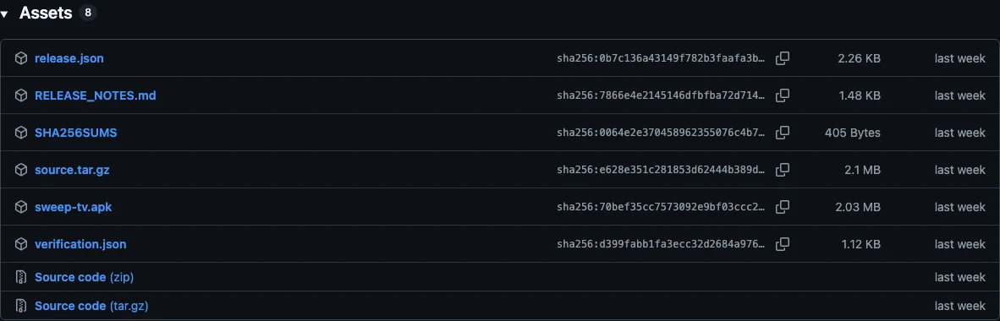

Install from a laptop with ADB
Connect over your network, pair with a code, or use supported USB debugging.
Requires Android TV or Google TV on Android 8.0 or newer, with APK installation allowed.
Prepare the TV and laptop
- Enable debugging on your TV. Under Settings → About, press OK on the build entry seven times. In Developer options, enable Wireless debugging or your TV’s network debugging option. Put both devices on the same Wi-Fi for a network connection.
- Get the tools and APK. Download Android Platform Tools, the signed APK, and its
SHA256SUMSfrom the release. - Check the file. Run
shasum -a 256 sweep-tv.apkon macOS,sha256sum sweep-tv.apkon Linux, orGet-FileHash .\sweep-tv.apk -Algorithm SHA256in PowerShell. Compare against the APK entry inSHA256SUMS. Stop if the checksums differ.

Connect
If the TV shows a pairing code, use the address shown in that dialog for adb pair. Then use the main Wireless debugging screen’s address for adb connect. It may use a different port.
adb pair 192.168.1.100:37123
adb connect 192.168.1.100:42189If the TV offers network debugging without pairing, connect to its listed address and approve the debugging prompt on the TV.
adb connect 192.168.1.100:5555The addresses above are examples. Replace them with the TV’s values. If the TV or box officially supports USB debugging through a data port, you can connect by USB and use its serial from adb devices -l. Android debugging instructions
Install and open
Run adb devices -l and confirm your TV appears as device. Then use its exact address or serial and the path to your APK.
adb devices -l
adb -s 192.168.1.100:5555 install -r sweep-tv.apkRun from the APK folder or pass its full path. Use ./adb on macOS/Linux or .\adb.exe in PowerShell if the executable is in your current folder and outside your PATH. After Success, open Sweep TV from Apps and turn off debugging when finished.